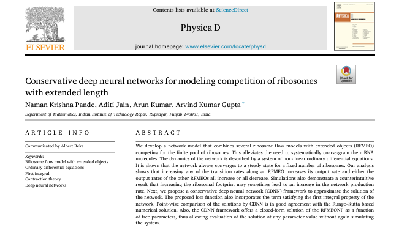
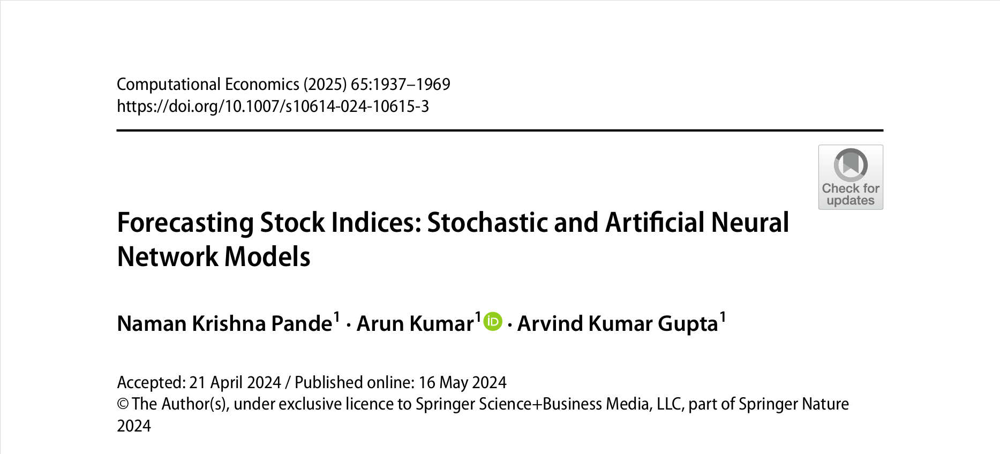
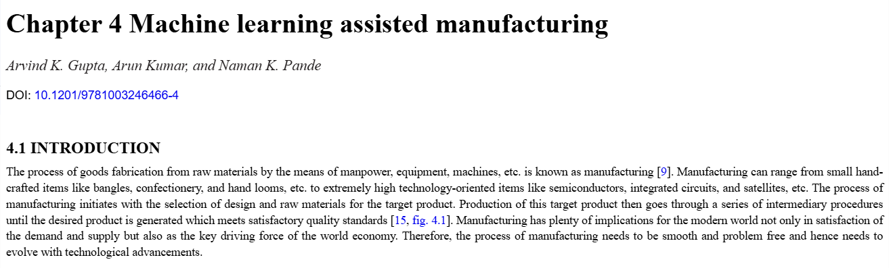

My Publications

- 
- 
- 
Naman Krishna Pande
Ph.D. Mathematics
Indian Institute of Technology Ropar
Mathematician | Researcher | AI & ML Enthusiast
Hello, I am a mathematician with a keen interest in machine learning, financial maths, and modelling of processes such as traffic flow and cellular transport. I am keenly interested in developing deep learning techniques integrated with physical laws, aiming for interpretable, efficient, and impactful solutions.
I am currently pursuing my Ph.D. in Mathematics at the Department of Mathematics, Indian Institute of Technology Ropar under the supervision of Prof. A.K. Gupta
1. Pande, N. K., Pasricha, P., Kumar, A., & Kumar Gupta, A. (2025). European option pricing in regime switching framework via physics-informed residual learning. Expert Systems with Applications, 288, 128226. https://doi.org/https://doi.org/10.1016/j.eswa.2025.128226.
2. Pande, N. K., Jain, A., Kumar, A., & Gupta, A. K. (2024). Conservative deep neural networks for modeling competition of ribosomes with extended length. Physica D: Nonlinear Phenomena, 470, 134415. https://doi.org/https://doi.org/10.1016/j.physd.2024.134415.
3. Pande, N. K., Kumar, A. & Gupta, A. (2024). Forecasting Stock Indices: Stochastic and Artificial Neural Network Models. Comput Econ 65, 1937–1969 https://doi.org/10.1007/s10614-024-10615-3.
4. Gupta, A. K., Kumar, A., & Pande, N. K. (2023). Machine learning assisted manufacturing. In Industry 4.0 (pp. 77–108). CRC Press.
Naman Krishna Pande
Department of Mathematics, Super Academic Block Part A
Indian Institute of Technology Ropar, Punjab, India - 140001
Email: namankpande5@gmail.com